Maps
Recent Work
A selection of recently published maps across climate, energy, and geopolitics.
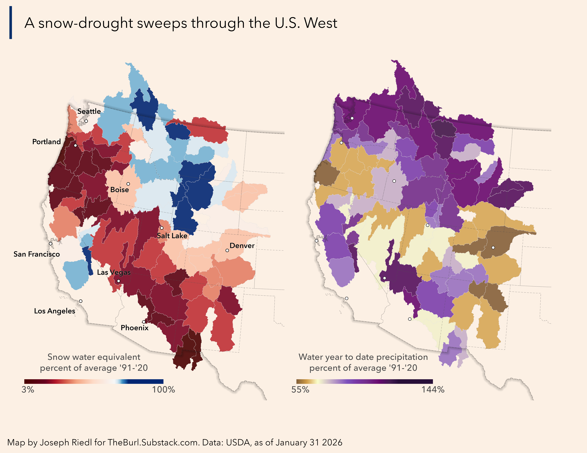
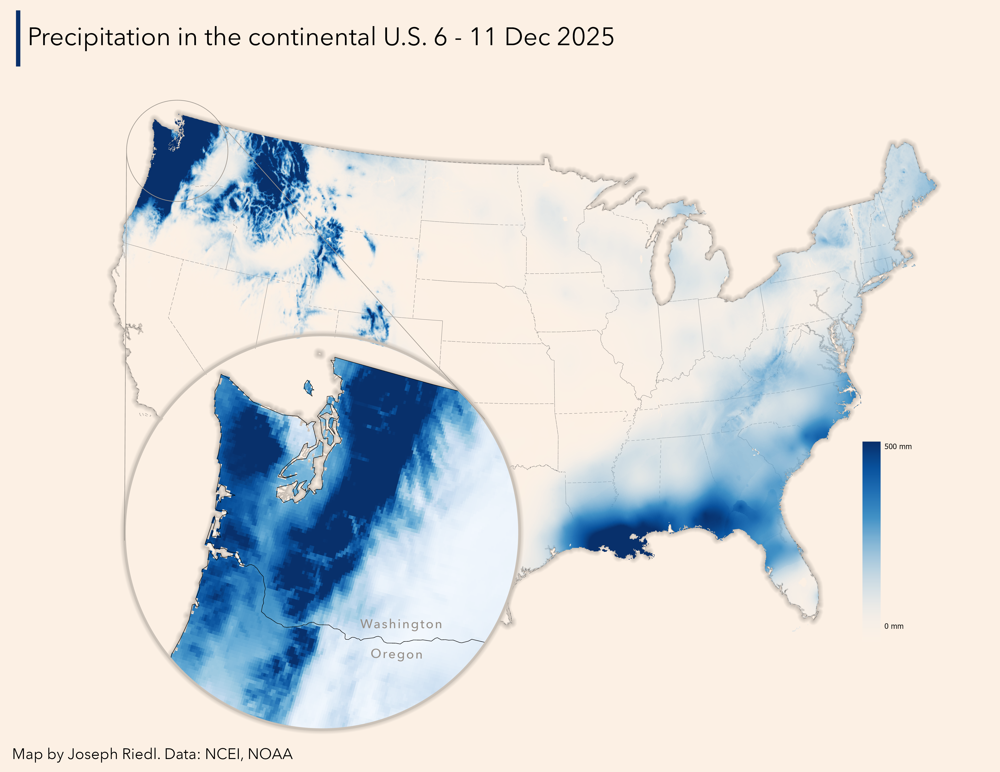
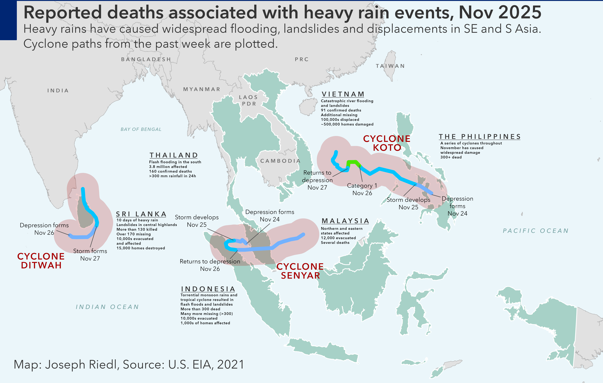

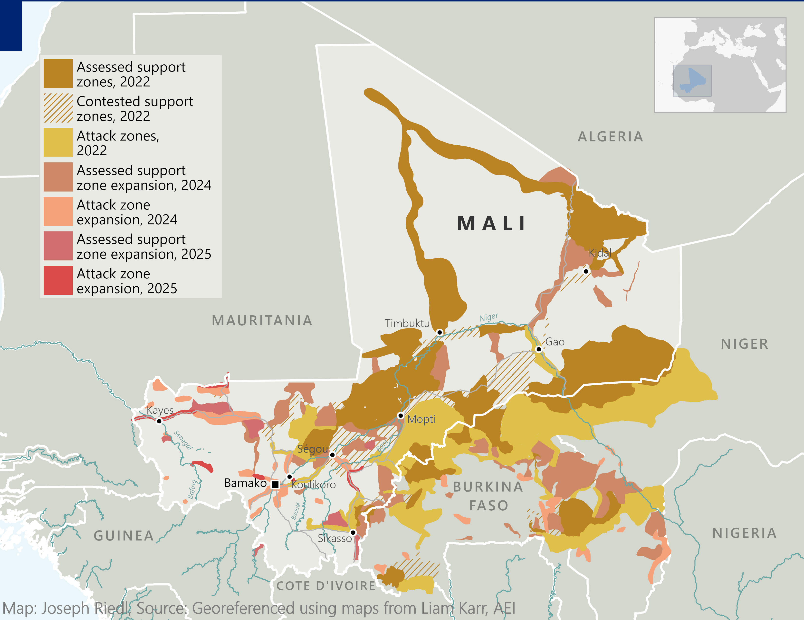
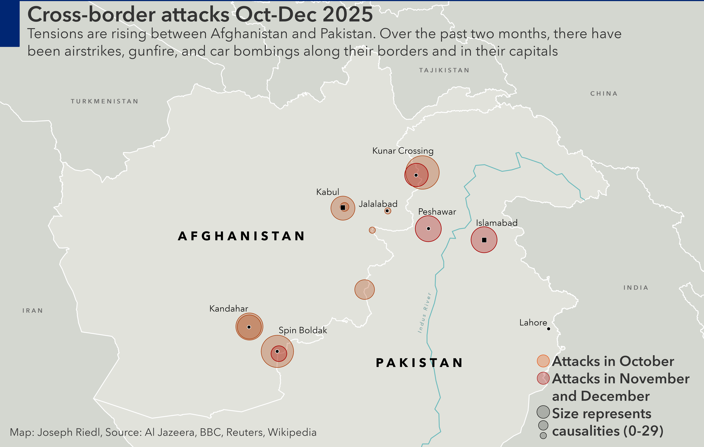
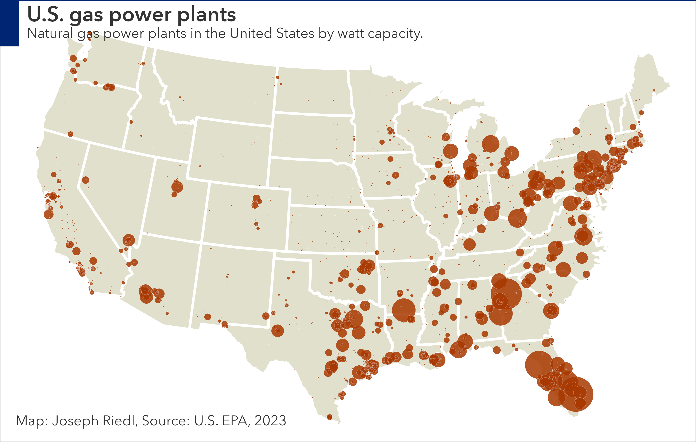
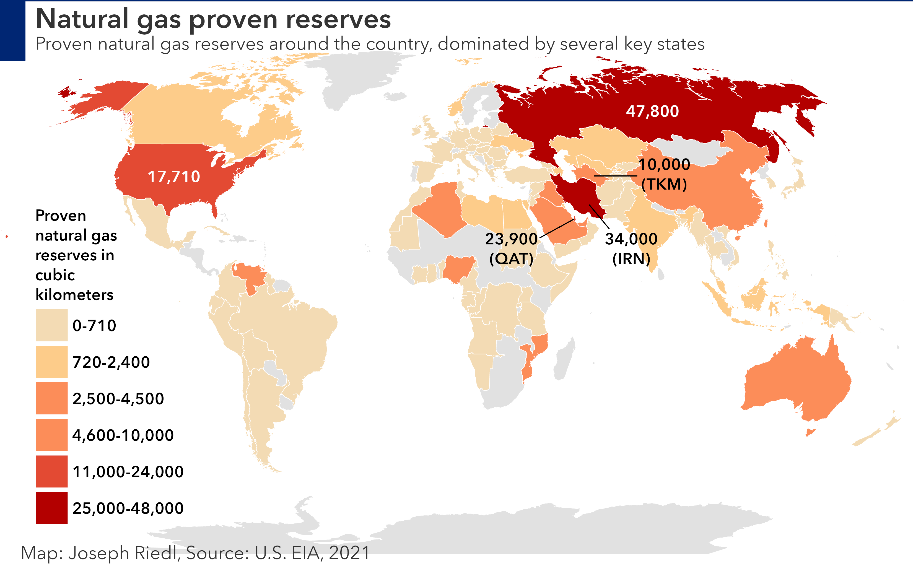
GIS consulting for international development and adaptation planning.
Services
Geospatial expertise applied to climate adaptation — from hazard mapping to institutional capacity, grounded in field context.
I.
Extreme weather is getting worse. Some are hit harder than others. I map those geographic disparities using a composite of vulnerability indices. By layering climate hazard with social factors (income, access to services, infrastructure), the analysis reveals not just where risk exists, but who is most exposed. My multi-hazard spatial analysis utilizes CMIP6 projections, open source administrative datasets, and community input for localized and scaled assessments.
II.
Communities are already retreating from sea level rise. Prolonged drought is forcing farmers to uproot entirely. Over a billion people worldwide live in informal settlements that are particularly vulnerable to the effects of climate change. Climate mitigation is no longer the sole necessity. Adaptation is paramount and remote sensing can help. I use Sentinel, Landsat and Earth Engine to understand and communicate realities on the ground.
III.
While most of the time you'll find me behind the computer screen, my true passion is talking to people. Giving people the tools to perform these analyses will help them strengthen their communities. I have conducted trainings to build GIS capacity both remotely and in person on five continents. From data management and spatial workflows to monitoring and evaluation using GIS tools.
Selected Work
A selection of projects across climate adaptation, development, and conservation.
Analyzed the effects of mesoscale frontal waves on North Pacific storms using NASA MERRA2 data, finding a statistically significant increase in storm duration and intensity. First author in partnership with Portland State University and the Center for Western Weather and Water Extremes, funded by the U.S. Army Corps of Engineers.
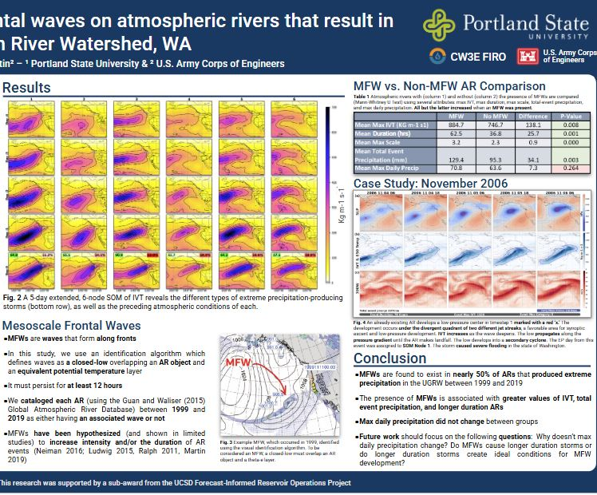
Combined on-the-ground fieldwork in remote regions of Madagascar with technical expertise to conduct a countrywide, high-resolution geospatial risk analysis. Built a methodological workflow to replicate the analysis in other countries throughout Africa. First author on a fact sheet for CIFOR–ICRAF with funding support from GIZ.
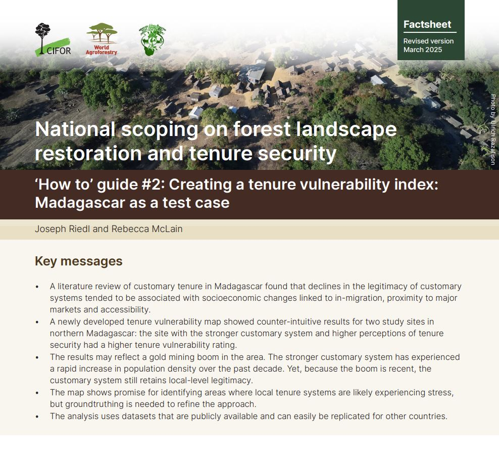
Non-author contributor to UN-Habitat's Multilayered Vulnerability Analysis Handbook. Assisted with implementation of the analysis with country offices on three continents. Delivered supplemental workshops on GIS and spatial analysis.
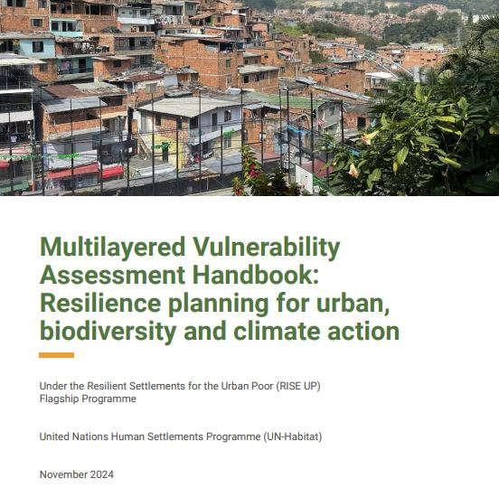
Maps
A selection of recently published maps across climate, energy, and geopolitics.







Experience and Organizational Clients
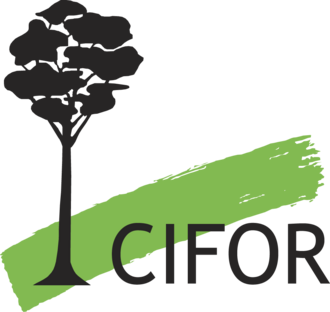
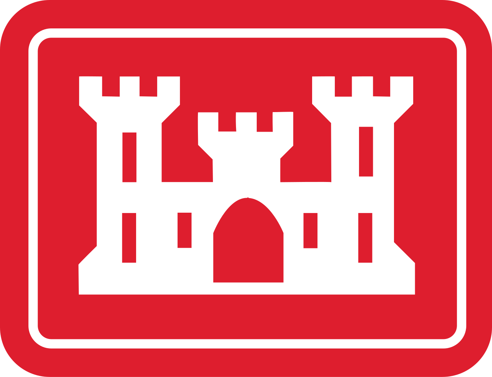
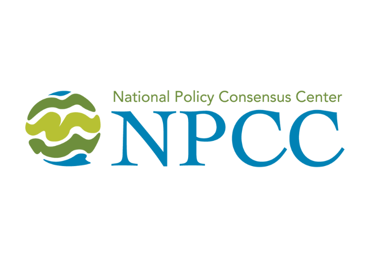
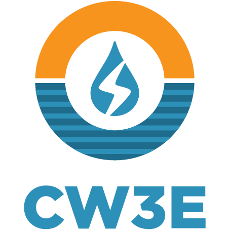
Contact
Working on a climate adaptation program that needs spatial analysis or GIS support? I’d like to hear about it.
joe@riedl.earth